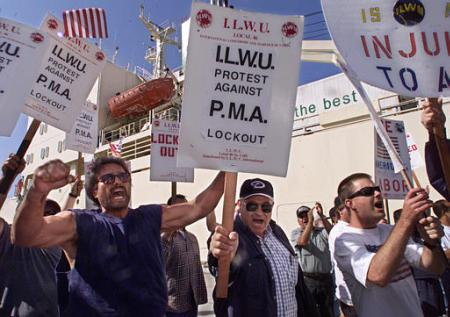

General Transportation Strike Looming in 2008? -Expiring master contracts give unions enormous leverage if they seize the moment
Submitted on Thu, 10/05/2006 - 2:47pm
Disclaimer - The following article is reposted here because it is an issue with some relevance to the IWW. The views of the author do not necessarily agree with those of the IWW and vice versa.
By Meredith Schafer and Chris Kutalik - Monthly Review, October 5, 2006
Millions of dollars worth of goods sat unmoved on the docks of the United States' largest port, Los Angeles/Long Beach, as port truckers, mostly Latino immigrants, struck on May 1. Despite being organized only informally in small networks, the truckers were able to use their position at a vital point in the economy to multiply their power.
Let's skip ahead to 2008 and imagine an even grander scenario. Instead of a small, determined group in one locale mining a strategic position, imagine the power of hundreds of thousands of workers who control the flow of goods -- from the docks to the airports to the truck barns and package centers -- using their leverage in one concerted, nationwide effort.
Sound like fantasy? In the spring and summer of 2008, master contracts will expire throughout the economically vital transportation, warehousing, and distribution industries, giving unions in those linked areas the rare, strategic opportunity to make an impressive show of force against employers.
WINDOW OF OPPORTUNITY
The Teamsters union, which now includes newly merged rail workers along with their traditional core of truck drivers and warehouse workers, will see its three largest national contracts expire in 2008.
The National Master Freight Agreement expires March 31, 2008, while the UPS master contract and the National Master Auto Transportation Agreement (covering carhaul workers) expire that same year. In all, the contracts cover over 300,000 workers (238,000 at UPS alone) -- most in areas where a job disruption could have a tremendous economic impact.
Similarly, nearly all contracts for major U.S. airlines expire in 2008 and 2009. Thomas Kochan, an expert on labor relations in the airline, has called this window a potential "Armageddon." Kochan believes that the close expirations dates of these contracts will potentially put unions in a "united front" in which employers will find it more difficult than in past years to divide different crafts and work groups in the industry.
ON THE DOCKS
But this potential convergence is not limited to Teamsters or the airline workers. On the West Coast, the International Longshore and Warehouse Union's (ILWU) coast-wide agreement with the Pacific Maritime Association (PMA) expires July 1, 2008. Major retailers fear disruptions. The last employer lockout of the ILWU, in September 2002, resulted in more than $147 million per day in economic damages.
The union faced an aggressive employer offensive led by Stevedoring Services of America, the largest U.S.-based terminal operating company. SSA is a provider of everything from terminal operating and rail yard operations to warehousing.
With SSA taking the lead, PMA effectively undermined the union politically and in the press in 2002. It brought employers (including giants such as Wal-Mart, Target, and Home Depot) together in the West Coast Waterfront Coalition. The level of coordination between retailers, shipping lines, politicians, and the corporate media put the union in a defensive position in 2002, signaling the need for a more comprehensive strategy to defend their future contracts and control over the work.
Since the Dubai Ports World debacle, where the issue of foreign-owned companies controlling U.S. ports was scandalized in the press, the many foreign-owned steamship companies that make up the PMA are more vulnerable to criticism from politicians and the media. Bruce Holte, secretary-treasurer of ILWU Local 8 in Portland, Oregon, believes the union learned an important lesson in 2002: "You need everybody." In terms of the union's media and political strategy, he says, "We are not playing catch-up this time, we're ready." But beyond matching the employer's political and media prowess, a real increase in the union's power over the long term could come through strategizing with other unions around contract expirations, and new organizing in the logistics sector.
How Choked Up Are These Points? -- The top 20 of the nation's 360 commercial ports, handle 80 percent of all imports and exports. Of those 20, the two largest -- Los Angeles/Long Beach and New York -- handle more than 40 percent of all imports. -- L.A./Long Beach further handles two-thirds of all imports coming in containers on the West Coast -- an estimated $ 500 million worth a day. -- The Congressional Budget Office estimates that a one-week disruption of the L.A./Long Beach port would cost the whole U.S. economy $65-$150 million a day. (Another study found that about $75 million was lost a day at the port complex during the ILWU lockout in 2002.) -- Roughly a fourth of all U.S. imports -- $423 billion of goods -- are shipped in by container ships. One-sixth of its exports or $139 billion are exported in the same way. --The CBO study also found that the lack of capacity of work sites off the docks such as warehouses, distribution centers, and intermodal yards connecting ports to trucks and rails was a large component of the current import/export bottleneck. |
If they are indeed ready to take on employers, dockworkers wield massive economic leverage. Since 1980, the amount of cargo handled by West Coast ports has increased 128 percent, and two-thirds of all containerized West Coast imports (an estimated $500 million worth a day of the nation's goods) come through the L.A./Long Beach port alone (see box for more).
This increase in cargo volumes puts West Coast dockworkers at a strategic chokepoint in a global economy reliant on imported goods. Major retailers' increasing use of just-in-time inventory schemes, which keep warehouses stocked to the minimum and rely on timely delivery, makes them particularly vulnerable to longshore disruptions.
LINING UP AS A STRATEGY
Recent examples illustrate how making use of nationwide contract expirations can make -- or break -- a campaign.
The United Food and Commercial Workers (UFCW), for instance, missed a crucial opportunity in late 2003 and early 2004 when at least 13 of the union's master contracts expired in the grocery industry alone, covering close to 190,000 workers. But the union failed to coordinate nationally, dooming the California strike (Labor Notes April 2004) and other scattered regional strikes in Ohio, West Virginia, Virginia, and Missouri to fail. Wage and benefit cuts, along with other concessions, followed in their wake.
In a more positive recent example, UNITE HERE has tried to wage a full-court press against hotel employers from coast to coast. After working for years to line up contract expirations for many major cities' hotels, in February 2006 it launched a continent-wide contract campaign called Hotel Workers Rising.
Though the results are not all in yet, the hotel campaign reflects a strategic approach that other unions would do well to follow (Labor Notes October 2006).
SEIZING THE DAY?
Potential power aside, the 64-million dollar question remains: are union leaders willing and able to seize the moment?
Though he's spoken of the need for more coordinated organizing and bargaining strategies, Teamsters President James P. Hoffa has been criticized inside his union for pushing for an early contract settlement with UPS -- one of the key pillars of the distribution side of the U.S. economy. (Negotiators officially sat down at the bargaining table September 19.)
Fearing a weak deal, Teamster reformers are making early negotiations a campaign issue in the union's hotly contested October general elections. Beyond using joint expirations dates to pressure employers, they believe that early negotiations will also undermine other potential leverage points at UPS.
Importantly, though, they also project an alternative vision. "Representing workers in ports, trucking and on the rails, our Teamsters union has a strategic foothold in the chokepoints of the North American economy," Hoffa's reform challenger, Tom Leedham, thundered at this summer's Teamster convention. "By mobilizing Teamsters members and organizing the unorganized at these chokepoints, we can become a union that truly has the power to move America or to shut it down."
Ultimately a larger, comprehensive strategy in transportation thus may rest on the outcomes of fights for leadership and direction by labor activists. And like all such questions hanging over the labor movement that one will undoubtedly remain hotly contested down to the wire.
Meredith Schafer is a former member of ILWU Local 5. She currently works as a freelance researcher for unions in Oregon. Chris Kutalik is co-editor of Labor Notes magazine (www.labornotes.org) in Detroit.